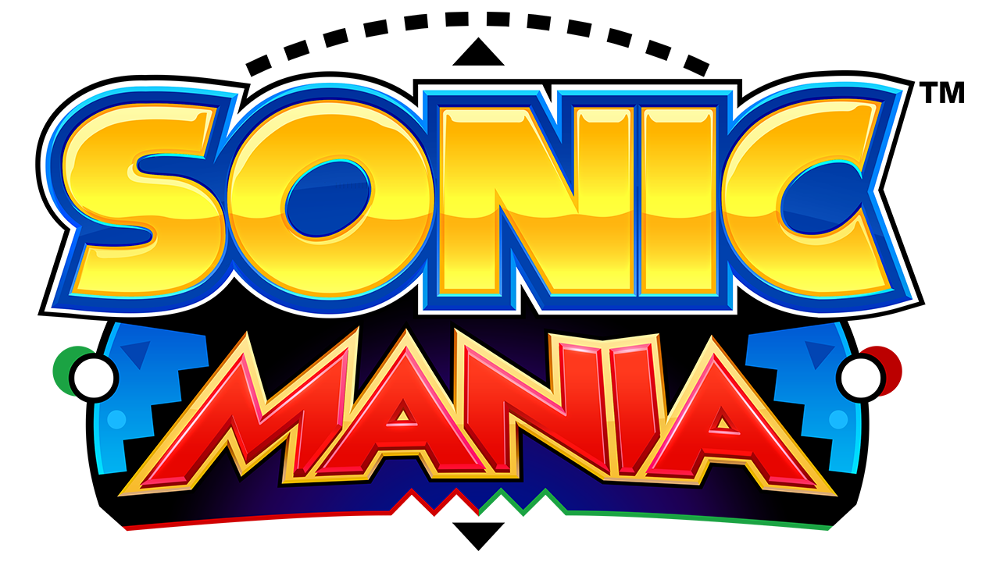

O grande retorno do Sonic Clássico! Sonic Mania apresenta fases antigas e novas, junto com uma recriação fiel das físicas dos jogos clássicos, criando um dos melhores jogos da franquia!
Com a fama do jogo, diversas fases customizadas foram criadas para o jogo, junto com algumas melhorias gráficas.
A controversia estréia da franquia nos consoles HDs, Sonic The Hedgehog (geralmente chamado de Sonic06) foi um jogo que foi lançado as pressas, com diversos bugs e problemas de otmização.
O jogo possui fases e ideias interessantes, que não foram apreciadas por causa dos problemas do jogo, porém recentemente um fã chamado de ChaosX2006 está criando um remake do jogo para computadores que consertar seus problemas.
O remake ainda não foi concluido porém grande parte das fases e personagens foi concluida.